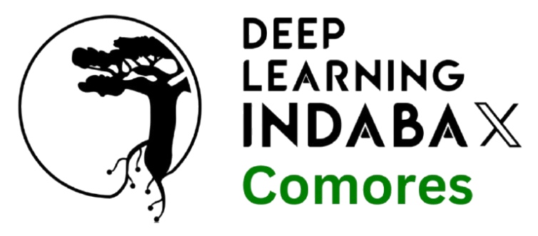

L'intelligence artificielle
prend racine aux Comores
IndabaX Comores réunit étudiants, chercheurs, développeurs et curieux autour du machine learning et de l'IA — pour construire une communauté scientifique comorienne, connectée au reste du continent africain.
À propos
Une Indaba, c'est une assemblée.
En swahili comme en zoulou, une indaba désigne une réunion où l'on discute des sujets qui comptent pour la communauté. Depuis 2017, le Deep Learning Indaba rassemble chaque année des centaines de chercheurs et praticiens de l'IA venus de tout le continent africain.
Le programme IndabaX permet à chaque pays d'organiser sa propre édition locale : un espace pour apprendre, partager ses recherches et créer des liens durables. IndabaX Comores est la déclinaison comorienne de ce mouvement panafricain.
« Renforcer le machine learning et l'intelligence artificielle en Afrique, pour que les Africains ne soient pas seulement spectateurs, mais aussi créateurs des avancées technologiques. »
— Mission du Deep Learning IndabaÉtudiant·e·s & chercheur·se·s
Découvrez les bases du machine learning, présentez vos travaux et rencontrez des mentors.
Développeur·se·s
Passez de la théorie à la pratique lors d'ateliers de code et de projets collaboratifs.
Curieux & décideurs
Comprenez les enjeux de l'IA pour l'économie, l'éducation et la société comorienne.
Programme
Une journée pour apprendre, coder et se rencontrer
Le programme se déroule sur une journée, de 08h30 à 17h00.
-
08h30
Accueil & enregistrement
Café d'accueil, réseautage et remise des badges.
-
09h30
Ouverture officielle
Mot de bienvenue et présentation du réseau Deep Learning Indaba.
-
10h30
Conférences plénières
Applications de l'IA en agriculture, santé et éducation dans l'océan Indien.
-
13h00
Pause déjeuner & posters
Exposition des projets de recherche et des startups locales.
-
14h00
Ateliers pratiques
Introduction à Python, aux réseaux de neurones et aux outils no-code d'IA.
-
17h00
Clôture & prochaines étapes
Restitution, remerciements et lancement de la communauté IndabaX Comores.
Intervenants & organisateurs
Portés par la communauté
Des experts comoriens, de la diasporas et internationaux.
Dr Naira Abdou Mohamed
Machine Learning Engineer
Said Abderemane
Data Monetization Leader
Mohamed-Saiaf Aliamini
Doctorant en IA
Partenaires
Ils soutiennent IndabaX Comores
Votre organisation souhaite soutenir l'événement ? Contactez-nous.

Rejoignez-nous
Prêt·e à faire partie de la première édition ?
L'inscription est gratuite. Laissez vos coordonnées et nous vous tiendrons informé·e des dates, du lieu et du programme détaillé.